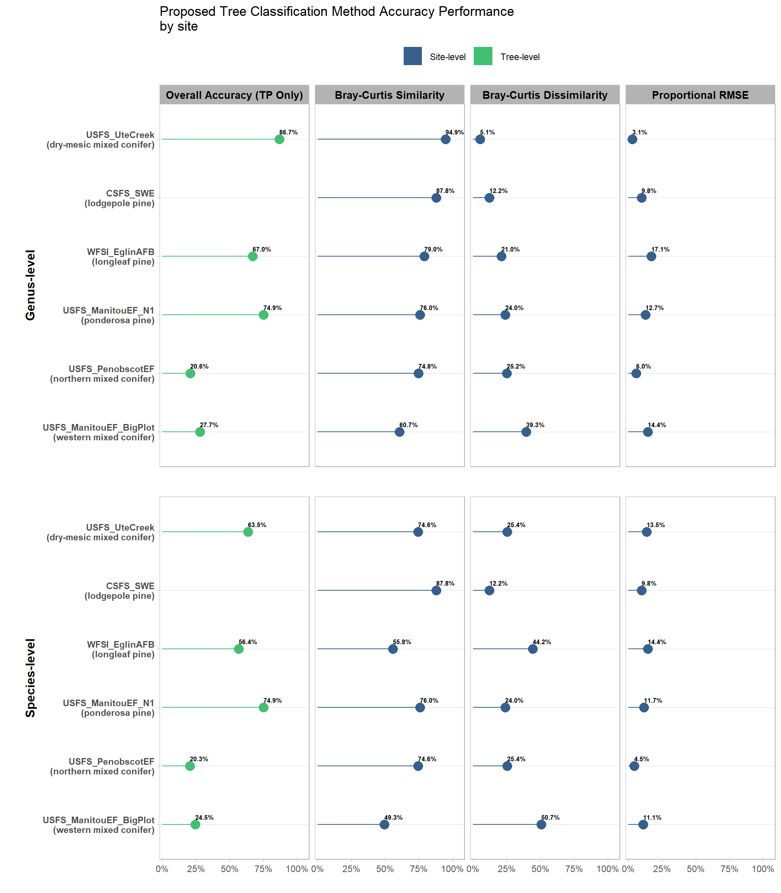

9 Taxonomic Classification Accuracy Summary
Now that we have completed the analysis and processing of the proposed species classification method for our collection of validation datasets, let’s summarize the achieved accuracy in one place.
As a reminder, here is what we did:
We compiled a collection of validation datasets across diverse forest conditions. These datasets consist of coincident aerial point cloud data (including USGS 3DEP ALS, UAS-lidar, and UAS-SfM) paired with field-measured stem maps or plot inventories where species identities are known.
We evaluated our proposed species classification method using two approaches:
- Individual Tree-Level Accuracy
This approach evaluates classification accuracy at the individual tree level. It maps every predicted tree species against the reference field-measured tree using a classical confusion matrix cross-tabulation. Given that our analysis is focused on evaluating the proposed taxonomic classification algorithm (rather than the individual tree detection method), we’ll evaluate the taxonomic classification accuracy conditionally for successfully detected tree crowns (true positive matches). This conditional evaluation will allow us to isolate taxonomic classification performance from tree detection errors.
The confusion matrix will allow us to calculate class-specific performance metrics, including producer’s accuracy (omission error) and user’s accuracy (commission error) and overall accuracy.
- Site-Wide Compositional Accuracy
Instead of evaluating trees one by one, this accuracy evaluation aggregates the species counts or proportions across an entire plot or forest stand. It then calculates the Bray-Curtis dissimilarity index to compare the predicted species composition against the observed field composition. The index returns a value between 0 and 1, where 0 indicates identical species compositions and 1 indicates completely non-overlapping communities. Because Bray-Curtis is a dissimilarity measure, it can be interpreted as:
\[\textrm{Bray-Curtis}_{dissimilarity} \approx 1-\textrm{Bray-Curtis}_{similarity}\]
The Bray-Curtis index is a widely trusted metric in community ecology. Dissimilarity/similarity metrics tell us how well the proposed method captures the overall ecological community structure. Even if individual tree predictions are misaligned, the proposed method may still capture the correct stand-level abundance proportions, which can still be valuable for management.
The metrics we will be looking at in this review are:
| Evaluation Level | Metric Name | Succinct Metric Description | Species-Level Evaluation | Genus-Level Evaluation |
|---|---|---|---|---|
| Individual Tree Level Accuracy (Taxonomic Classification Power) |
Overall Accuracy (OA) | Proportion of correctly classified species/genera among successfully detected trees (TP matches). | ✓ | ✓ |
| Site-Wide Compositional Accuracy (Stand Inventory Performance) |
Bray-Curtis Dissimilarity | Proportion of absolute species/genus abundance mismatched. | ✓ | ✓ |
| Bray-Curtis Similarity | Proportion of absolute species/genus abundance matching perfectly. | ✓ | ✓ | |
| Proportional RMSE | Average percentage deviation error margin per species/genus. | ✓ | ✓ |
Accuracy metrics were evaluated at both the species and genus taxonomic levels to quantify the accuracy trade-offs associated with pushing the classification method to the finest taxonomic level (species). We anticipate classification performance at the genus level to be higher than at the species level because aggregating predictions into broader taxonomic groups inherently reduces the number of classification classes, increasing the mathematical probability of a correct match. An acceptable level of classification accuracy at the genus-level can still be valuable in operational forestry settings. Species within the same genus frequently occupy similar ecological functional roles, and distinguishing between them represents one of the most persistent challenges when relying on remote sensing datasets alone (Vauhkonen et al., 2014b). Furthermore, members of the same genus typically exhibit similar growth forms and structural geometries, which mitigates species-level misclassifications when using volumetric equations. From an operational management perspective, individual species-level distinction within a genus, such as separating blue spruce (Picea pungens) from Engelmann spruce (Picea engelmannii), for example, often yields marginal practical benefit if their allometries and ecological roles remain functionally similar.
If the primary management objective requires highly accurate species-level classification at the individual tree level, then our proposed approach is likely to be insufficient and unreliable. Especially across structurally diverse forest types.
# add descriptions to the data
# | WFSI Elgin AFB | Florida | longleaf pine | ALS | tree locations |
# | Manitou Experimental Forest (N1) | Colorado | ponderosa pine | UAS-lidar | tree locations |
# | Manitou Experimental Forest (Big Plot) | Colorado | western mixed conifer | UAS-SfM | tree locations |
# | Penobscot Experimental Forest | Maine | northern mixed conifer | ALS | tree locations |
# | Ute Creek | Colorado | dry-mesic mixed conifer | UAS-SfM | tree locations |
# | CSFS State Forest State Park | Colorado | lodgepole pine | UAS-lidar | plots |
# | WFSI Fort Stewart | Georgia | southern yellow pine forest | UAS-lidar | plots |
# | BLM Dawson Creek | Colorado | pinyon-juniper | UAS-SfM | tree locations |
# | Wabikon Lake Forest Dynamics Plot (ForestGEO) | Wisconsin | northern mixed hardwood | ALS | tree locations |
# | UC Santa Cruz Forest Ecology Research Plot (ForestGEO) | California | coastal mixed-evergreen & coast redwood | ALS | tree locations |
# | Smithsonian Environmental Research Center (ForestGEO) | Maryland | mixed deciduous hardwood | ALS | tree locations |
# | Smithsonian Conservation Biology Institute (ForestGEO) | Virginia | mid-atlantic deciduous | ALS | tree locations |
project_data_df <-
project_data_df %>%
dplyr::mutate(
data_ftype_desc = dplyr::recode_values(
data_site_nm
, "BLM_TRFO" ~ "pinyon-juniper"
, "CSFS_SWE" ~ "lodgepole pine"
, "ForestGEO_IUFDP" ~ "xxx"
, "ForestGEO_OSBS" ~ "xxx"
, "ForestGEO_SCBI" ~ "mid-atlantic deciduous"
, "ForestGEO_SERC" ~ "mixed deciduous hardwood"
, "ForestGEO_UCSC_FERP" ~ "coastal mixed-evergreen & coast redwood"
, "ForestGEO_WLF" ~ "northern mixed hardwood"
, "USFS_ManitouEF_BigPlot" ~ "western mixed conifer"
, "USFS_ManitouEF_N1" ~ "ponderosa pine"
, "USFS_PenobscotEF" ~ "northern mixed conifer"
, "USFS_UteCreek" ~ "dry-mesic mixed conifer"
, "WFSI_EglinAFB" ~ "longleaf pine"
, "WFSI_FtStewart" ~ "southern yellow pine"
)
)big overview table
project_data_df %>%
dplyr::filter(
!is.na(acc_site_genus_bc_dissimilarity)
) %>%
dplyr::mutate(
site = paste0(
data_site_nm
, "<br />("
, data_ftype_desc
, ")"
)
) %>%
dplyr::select(
site, tidyselect::starts_with("acc_")
) %>%
dplyr::mutate(dplyr::across(
dplyr::where(is.numeric)
, ~scales::percent(.x,accuracy=0.1)
)) %>%
tidyr::pivot_longer(-site) %>%
dplyr::mutate(
taxon_level = stringr::str_extract(name,"(species|genus)") %>% stringr::str_to_title()
, name = stringr::str_remove(name,"^acc_") %>%
stringr::str_remove(tolower(taxon_level)) %>%
stringr::str_replace_all("__","_")
) %>%
tidyr::pivot_wider(names_from = name, values_from = value) %>%
dplyr::select(taxon_level,site, tidyselect::starts_with("tree_"), tidyselect::starts_with("site_")) %>%
dplyr::arrange(taxon_level,site) %>%
kableExtra::kbl(
caption = "Proposed Tree Classification Method Accuracy Performance<br />by site"
, col.names = c(
"taxonomic-level"
, "site"
, "Overall Accuracy (TP Only)"
, "Bray-Curtis Dissimilarity"
, "Bray-Curtis Similarity"
, "Proportional RMSE"
)
, escape = F
) %>%
kableExtra::kable_styling(font_size = 11.5, bootstrap_options = c("responsive", "condensed","striped")) %>% #
kableExtra::scroll_box(width = "100%") %>% # put a HTML kable object in a fixed-height, fixed-width or both box and make it scrollable
kableExtra::add_header_above(
c(
" "=2
, "Tree Level" = 1
, "Site Level" = 3
)
, escape = F
) %>%
kableExtra::column_spec(1:2, bold = TRUE) %>%
kableExtra::column_spec(c(2,3,6), border_right = TRUE, include_thead = TRUE) %>%
kableExtra::collapse_rows(columns = 1, valign = "top")| taxonomic-level | site | Overall Accuracy (TP Only) | Bray-Curtis Dissimilarity | Bray-Curtis Similarity | Proportional RMSE |
|---|---|---|---|---|---|
| Genus |
CSFS_SWE (lodgepole pine) |
NA | 12.2% | 87.8% | 9.8% |
|
USFS_ManitouEF_BigPlot (western mixed conifer) |
27.7% | 39.3% | 60.7% | 14.4% | |
|
USFS_ManitouEF_N1 (ponderosa pine) |
74.9% | 24.0% | 76.0% | 12.7% | |
|
USFS_PenobscotEF (northern mixed conifer) |
20.6% | 25.2% | 74.8% | 6.0% | |
|
USFS_UteCreek (dry-mesic mixed conifer) |
86.7% | 5.1% | 94.9% | 3.1% | |
|
WFSI_EglinAFB (longleaf pine) |
67.0% | 21.0% | 79.0% | 17.1% | |
| Species |
CSFS_SWE (lodgepole pine) |
NA | 12.2% | 87.8% | 9.8% |
|
USFS_ManitouEF_BigPlot (western mixed conifer) |
24.5% | 50.7% | 49.3% | 11.1% | |
|
USFS_ManitouEF_N1 (ponderosa pine) |
74.9% | 24.0% | 76.0% | 11.7% | |
|
USFS_PenobscotEF (northern mixed conifer) |
20.3% | 25.4% | 74.6% | 4.5% | |
|
USFS_UteCreek (dry-mesic mixed conifer) |
63.5% | 25.4% | 74.6% | 13.5% | |
|
WFSI_EglinAFB (longleaf pine) |
56.4% | 44.2% | 55.8% | 14.4% |
# kableExtra::footnote(
# # general = "*minimum height to be considered a 'tree': 2 m"
# # , number = c("Footnote 1; ", "Footnote 2; ")
# # , alphabet = c("Footnote A; ", "Footnote B; ")
# # , symbol = c("Footnote Symbol 1; ", "Footnote Symbol 2")
# )it’s probably easier to see the data
project_data_df %>%
dplyr::filter(
!is.na(acc_site_genus_bc_dissimilarity)
) %>%
dplyr::mutate(
site = paste0(
data_site_nm
, "\n("
, data_ftype_desc
, ")"
) %>%
forcats::fct_reorder(acc_site_genus_bc_similarity)
) %>%
dplyr::select(
site, tidyselect::starts_with("acc_")
) %>%
# dplyr::mutate(dplyr::across(
# dplyr::where(is.numeric)
# , ~scales::percent(.x,accuracy=0.1)
# )) %>%
tidyr::pivot_longer(-site) %>%
dplyr::mutate(
taxon_level = stringr::str_extract(name,"(species|genus)") %>% stringr::str_to_title() %>% stringr::str_c("-level")
, sum_level = stringr::str_extract(name,"(site|tree)") %>% stringr::str_to_title() %>% stringr::str_c("-level")
, name =
name %>%
stringr::str_remove("^acc_tree_species_") %>%
stringr::str_remove("^acc_site_species_") %>%
stringr::str_remove("^acc_tree_genus_") %>%
stringr::str_remove("^acc_site_genus_")
# , metric = dplyr::case_when(
# name == "overall" ~ "Overall Accuracy (TP Only)"
# , name == "bc_dissimilarity" ~ "Bray-Curtis Dissimilarity"
# , name == "bc_similarity" ~ "Bray-Curtis Similarity"
# , name == "prop_rmse" ~ "Proportional RMSE"
# )
, metric = factor(
name
, levels = c(
"overall" # ~ "Overall Accuracy (TP Only)"
, "bc_similarity" # ~ "Bray-Curtis Similarity"
, "bc_dissimilarity" # ~ "Bray-Curtis Dissimilarity"
, "prop_rmse" # ~ "Proportional RMSE"
)
, ordered = T
, labels = c(
"Overall Accuracy (TP Only)" # "overall"
, "Bray-Curtis Similarity" # "bc_similarity"
, "Bray-Curtis Dissimilarity" # "bc_dissimilarity"
, "Proportional RMSE" # "prop_rmse"
)
)
, value_lab = scales::percent(value,accuracy = 0.1)
) %>%
# plot
ggplot2::ggplot(
mapping = ggplot2::aes(x = value, y = site, color = sum_level)
) +
ggplot2::geom_segment(
mapping = ggplot2::aes(x = 0, xend = value, yend = site)
) +
ggplot2::geom_point(size = 4) +
ggplot2::geom_text(
mapping = ggplot2::aes(label = value_lab, fontface = "bold")
, color = "black"
, size = 2.3
# , nudge_x = 0.006
, hjust = 0, vjust = -1
# , hjust = -0.4
) +
ggplot2::facet_grid(
rows = dplyr::vars(taxon_level)
, cols = dplyr::vars(metric)
# , scales = "free_x"
, switch = "y"
) +
ggplot2::scale_x_continuous(
limits = c(0,1)
, labels = scales::label_percent(accuracy = 1)
, expand = ggplot2::expansion(mult = c(0.02,0.09))
) +
ggplot2::scale_color_viridis_d(begin = 0.3, end = 0.7) +
ggplot2::labs(
title = "Proposed Tree Classification Method Accuracy Performance\nby site"
, x = "" # "metric value"
, y = "" # "study site"
, color = "" # "study site"
) +
ggplot2::theme_light() +
ggplot2::theme(
legend.position = "top"
, strip.text = ggplot2::element_text(size = 10, color = "black", face = "bold")
, strip.placement = "outside"
, strip.text.y.left = ggplot2::element_text(size = 12, face = "bold", angle = 90, hjust = 0.5)
, strip.background.y = ggplot2::element_blank()
, panel.spacing.y = ggplot2::unit(2, "lines")
, axis.text.y = ggplot2::element_text(face = "bold")
, panel.grid.major.x = element_blank()
, panel.grid.minor.x = element_blank()
) +
ggplot2::guides(
color = ggplot2::guide_legend(override.aes = list(shape = 15, lwd = NA, size = 8, fill = NA))
, fill = "none"
)
neat.